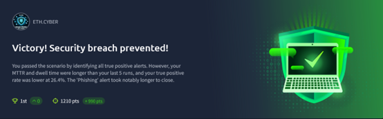

Overview
This project documents my experience in a SOC Simulator, a realistic cybersecurity analyst environment designed to enhance threat intelligence and incident response skills.
Tools Used
- Splunk SIEM – centralized log collection and analysis
- Wireshark – network traffic analysis
- PowerShell – automation and incident investigation
- VirusTotal – file and URL reputation analysis
Project Description
During this scenario, I:
- Analyzed alerts in real-time and classified them as malicious or benign
- Investigated phishing campaigns and suspicious process relationships
- Correlated digital evidence to determine attack sources and response strategies
- Prepared AI-reviewed incident reports highlighting IOCs and mitigation actions
Results & Skills Gained
- Achieved 100% accuracy in identifying true positives and false positives
- Managed and resolved 21 alerts with a mean response time of 3 minutes
- Enhanced skills in digital forensics, technical analysis, and real-time incident response
Key Metrics:
✅ True Positive Identification Rate: 100%
✅ False Positive Identification Rate: 100%
⏱ Mean Time to Resolve Alerts: 3 minutes
⏱ Mean Dwell Time: 34 minutes
File Structure
PDF/– Full project reportimages/– Scenario screenshotsscripts/– Python automation or analysis scriptsattachments/– sample email attachments for training and analysis
Summary
This SOC Simulator project improved my hands-on skills in real-time threat detection, incident response, and digital forensics. It provided practical experience in a dynamic SOC environment, enhancing my technical analysis and investigative capabilities.
License
This project is for educational purposes and open for review and learning.